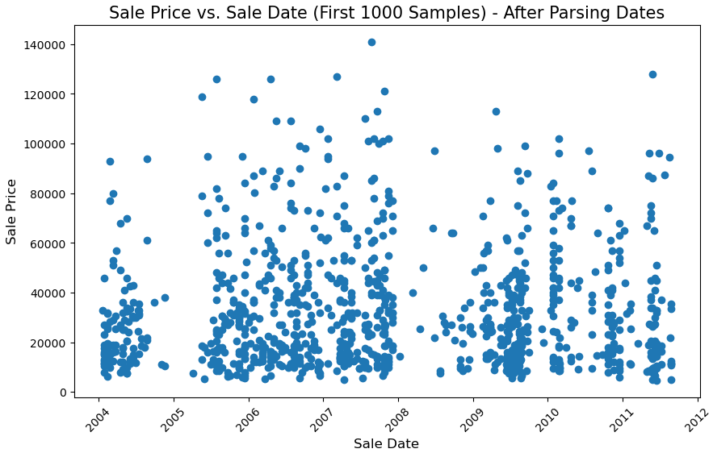
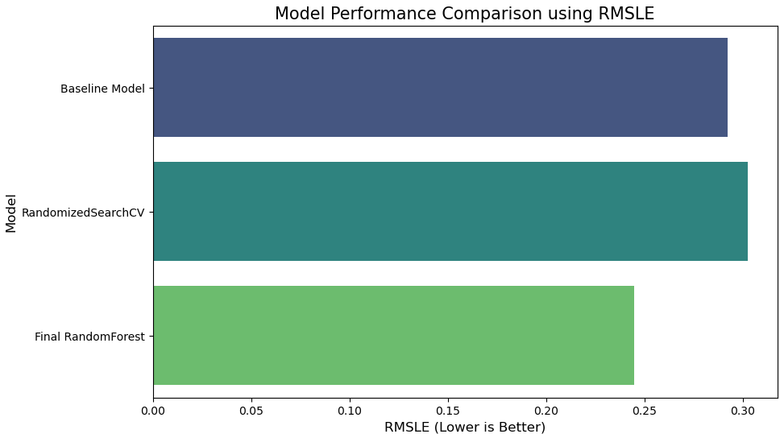

Project Overview
This project involves exploring the Bulldozer Bluebook dataset to predict future sale prices of bulldozers based on their historical sales data. The dataset, sourced from Kaggle, includes various characteristics of bulldozers and their sale prices, making it a time series regression problem. The goal is to build a predictive model using machine learning techniques like Random Forest Regression.
Data Preparation and Preprocessing
The dataset contains three main parts: training, validation, and test sets, which are divided based on time frames. We focused on cleaning the data, handling missing values, and converting categorical variables into numerical ones. Exploratory Data Analysis (EDA) was performed to understand the distribution of the data and the relationships between different features.
Model Development and Training
A Random Forest Regressor was chosen as the primary model due to its robustness and ability to handle high-dimensional data. We performed hyperparameter tuning using RandomizedSearchCV to optimize the model's performance. The evaluation metric used for the project is Root Mean Squared Log Error (RMSLE), which is particularly suited for regression problems involving skewed target distributions.

Results and Evaluation
The final model achieved a RMSLE score of 0.2438 on the validation set, demonstrating good predictive performance. Feature importance analysis showed that attributes like 'YearMade', 'MachineID', and 'ModelID' significantly impact the sale price prediction.
Conclusion
This project highlights the effectiveness of machine learning in predicting complex, real-world regression problems. Further improvements could be made by experimenting with other models such as XGBoost or incorporating external economic factors that may affect bulldozer sales.
See on GitHub Back to Projects